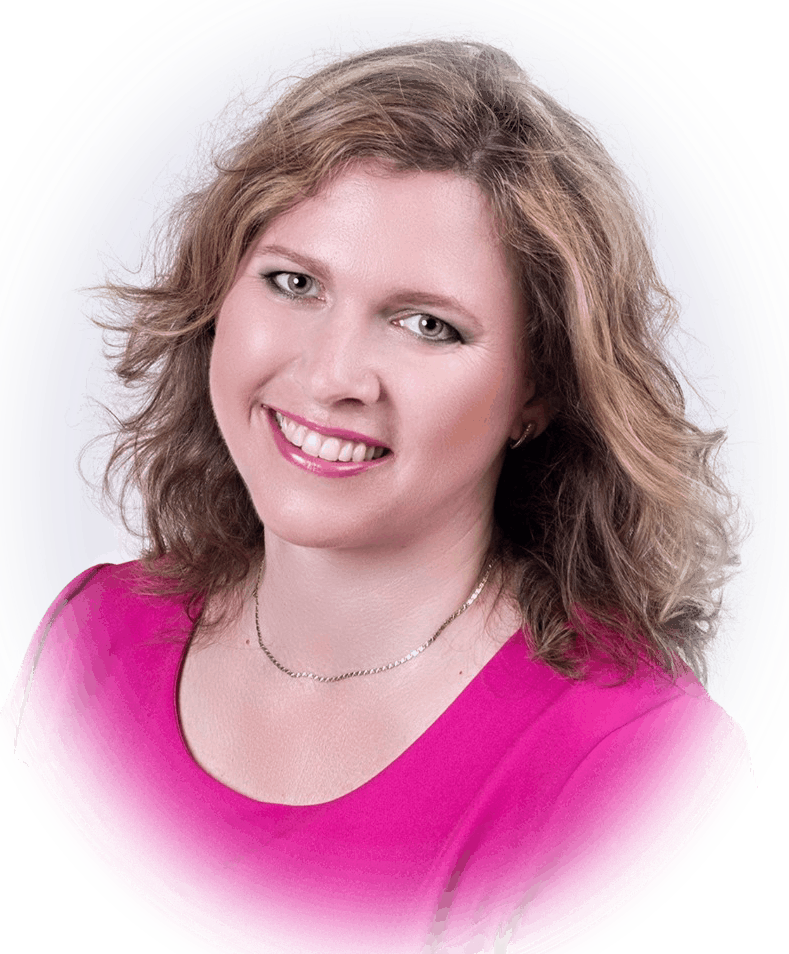

Stručně o mně
Jsem absolventkou Pedagogické fakulty MU v Brně a Fakulty humanitních studií Univerzity Tomáše Bati ve Zlíně. Tato studia mě motivovala k hledání efektivních metod a technik, které umožňují osvobození od nejrůznějších emočních problémů a přinesou tak radost a svobodu do dalšího života.
Působím jako terapeutka, osobní koučka, lektorka, mentorka a kinezioložka.
Při své terapeutické a koučovací praxi používám mimo jiné postmoderní terapeutický přístup i techniky na hluboce zaměřené pozornosti. Bachovu terapii®. Věnuji se též kineziologii One Brain – Three in One Concepts®.

- 14 let manažerské praxe
- 12 let lektorské činnosti
- 12 let praxe s klienty v oblasti osobního rozvoje
- 12 let praxe v oblasti relaxačních technik
- 4 roky praxe v krizové intervenci
Vzdělání a kurzy
- Frekventantka akreditovaného psychoterapeutického výcviku Terapie v postmoderně – Gaudia Institut, s.r.o. (od roku 2022, pracující pod supervizí)
- Práce s traumatem – Sabine Vermeire - Gaudia Institut, s.r.o.
- Výcvik komplexní krizové intervence – Modrá linka, z.s.
- Výcvik chatové krizové intervence – Modrá linka, z.s.
- Základy krizové komunikace – Institut Bernarda Bolzana, v.o.s.
- Klient s psychiatrickou diagnózou – Institut Bernarda Bolzana, v.o.s.
- Neuro-lingvistické programování (NLP) stupeň Master Practitioner / Centrum systemiky a NLP (Česká republika / Velká Británie)
- Neuro-lingvistické programování (NLP) New Code Practitioner / Centrum systemiky a NLP (Česká republika / Velká Británie)
- Osobní talent – Akor, s.r.o.
- Kouč osobního rozvoje 1. stupeň – Akor, s.r.o.
- Kouč osobního rozvoje 2. stupeň – Akor, s.r.o.
- Ženský koučink I – Akor, s.r.o.
- Ženský koučink II – Akor, s.r.o.
- Bachova terapie – Mgr. Martina Taubrová, BFRP
- MBSR – Mindfulness – bemindfull s.r.o.
- Kineziologie One brain – Three in one
- Metamorfní technika
- Arteterapie – Masarykova univerzita v Brně
- Kognitivní trénink paměti
- Psychohygiena a relaxační techniky